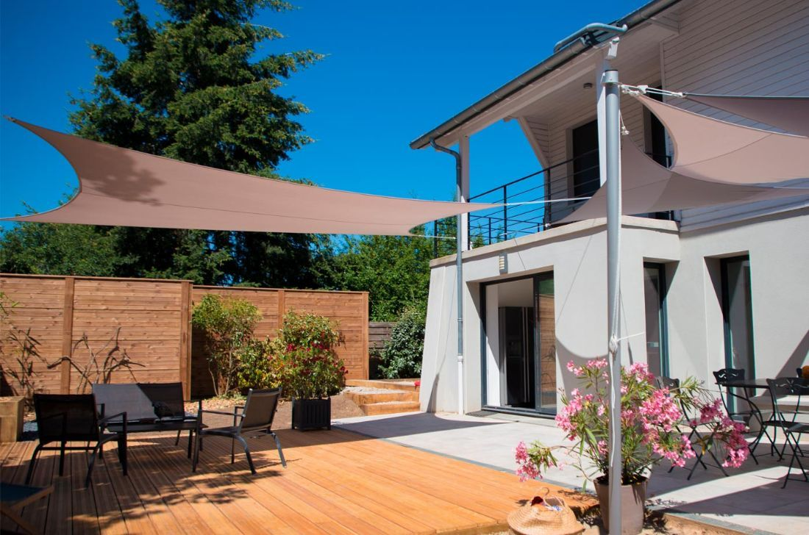

Hérault (34) · Sur mesure
Stores, parasols et voiles d'ombrage à Montpellier
Terrasses, balcons, jardins et terrasses de restaurant : Parasolia conçoit et installe vos protections solaires sur mesure à Montpellier et dans toute sa métropole. Un technicien se déplace chez vous pour l'étude, gratuitement et sans engagement.
Nos produits à Montpellier
Ce que nous installons chez vous
Chaque protection solaire est fabriquée sur mesure : dimensions, toile, coloris et motorisation sont choisis avec vous lors de l'étude.
Bien choisir à Montpellier
- Un soleil presque toute l'année. Montpellier compte parmi les villes les plus ensoleillées de France : un store ou un parasol y sert du printemps à l'automne. Nous privilégions des toiles teintées masse, qui gardent leurs couleurs malgré l'exposition.
- Des terrasses d'appartement. Pour les balcons et terrasses en résidence, les stores coffre compacts et les parasols déportés s'adaptent aux petites surfaces. Pensez à vérifier le règlement de copropriété : nous vous aidons à préparer la demande.
- Vent et orages méditerranéens. Le vent et les orages peuvent arriver vite. Les capteurs vent replient automatiquement le store, et nos voiles sont posées avec des fixations dimensionnées pour la prise au vent.
Communes desservies autour de Montpellier
Castelnau-le-Lez, Lattes, Pérols, Mauguio, Palavas-les-Flots, Saint-Jean-de-Védas, Juvignac, Grabels, Montferrier-sur-Lez, Le Crès, et tout le Languedoc-Roussillon.
Comment ça se passe
- Vous nous contactez par le formulaire ou par téléphone
- Un technicien vient chez vous : mesures, conseils, choix des toiles
- Vous recevez une étude sur mesure, sans engagement
- Fabrication, puis pose par nos soins
Questions fréquentes
Parasolia à Montpellier
Intervenez-vous à Montpellier et dans les communes voisines ?
Oui. Nous intervenons à Montpellier et dans les communes alentour : Castelnau-le-Lez, Lattes, Pérols, Mauguio, Palavas-les-Flots, Saint-Jean-de-Védas, Juvignac, Grabels, Montferrier-sur-Lez, Le Crès, ainsi que dans tout le Languedoc-Roussillon.
L'étude est-elle payante ?
Non. Un technicien se déplace gratuitement chez vous, prend les mesures, vous présente les toiles et les finitions, puis vous remet une étude sur mesure, sans engagement. Aucun frais de déplacement n'est facturé.
Quels produits proposez-vous ?
Parasols haut de gamme, voiles d'ombrage sur mesure, stores bannes à coffre, store double pente, stores zip extérieurs et stores intérieurs, ainsi que le réentoilage de stores existants.